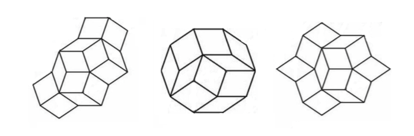

Rigidity Lab
One you have the acrylic rods, some rhombic faces and screws, try to
build a framework from the images shown below

Here are some questions to guide your explorations.
- Study the possible deformations of the framework without bracing
any face. How does it move?
- Brace exactly one face of the framework and think about what
other faces are affected by bracing that single face. Are you able
to brace a second face and make more than two faces rigid?
- Brace as many faces as you think are necessary to make the
framework rigid. Bracing every single face of the
framework will do the trick but, are you able to make it rigid by
bracing fewer faces?